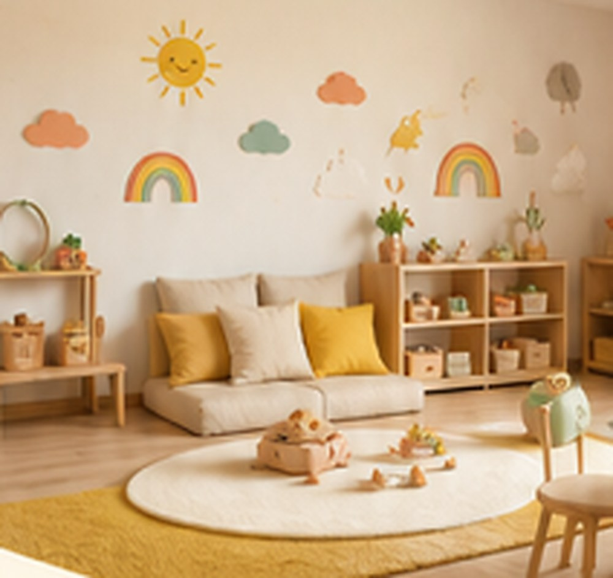

Bienvenue chez Les P'tits Soleils
Située au 60 rue Saint-Jean à Tarbes, dans le quartier de l'Arsenal, notre micro-crèche accueille les tout-petits, de 10 semaines à 3 ans révolus, dans un environnement chaleureux, sécurisant et rempli de douceur.
Pensée pour accueillir jusqu'à 12 petits soleils, notre micro-crèche privilégie un accueil à la fois collectif et personnalisé. Ici, chaque enfant peut grandir, découvrir, jouer, expérimenter… et surtout s'épanouir à son propre rythme !
Parce que chaque famille a ses propres besoins, nous proposons également des accueils réguliers, occasionnels ou d'urgence, pour apporter un peu de souplesse au quotidien.
En collaboration avec la PMI et la mairie, nous avons à cœur de créer un lieu où les enfants se sentent bien, où les parents sont en confiance, et où chaque journée apporte son lot de sourires, de découvertes, de mouvements et de bonne humeur !
L'essentiel en un coup d'œil
Les informations pratiques que les familles nous demandent le plus souvent.
-
Adresse60 rue Saint-Jean, 65000 Tarbes, quartier de l'Arsenal
-
HorairesDu lundi au vendredi, de 7h30 à 18h30
-
Âges accueillisDe 10 semaines à 3 ans révolus
-
CapacitéMicro-crèche de 12 places
-
Types d'accueilRégulier, occasionnel et d'urgence, de 1 à 5 jours par semaine

Nos espaces
Une grande salle de jeux a été pensée spécialement pour permettre aux enfants de bouger, grimper, explorer, manipuler et laisser libre cours à leur imagination. Un espace où chaque journée sera l'occasion de nouvelles découvertes… et de jolies petites aventures !
Et parce qu'on aime garder quelques petites surprises… il faudra venir découvrir le reste par vous-même ! Prenez rendez-vous pour visiter la crèche.
Loane, notre directrice
Passionnée par le monde de la petite enfance et particulièrement attentive au bien-être et au développement des tout-petits, Loane possède 5 années d'expérience dans le secteur.
Organisée, bienveillante et toujours à l'écoute, elle veille au bon fonctionnement de la micro-crèche tout en accordant une place essentielle aux enfants, à leurs besoins… et aux familles !
Son objectif ? Faire des P'tits Soleils un endroit où les enfants arrivent avec le sourire, grandissent en confiance et repartent avec plein de jolis souvenirs… et parfois quelques miettes de goûter !
Avec une équipe passionnée à ses côtés, Loane a à cœur de faire vivre un lieu chaleureux, bienveillant et plein de bonne humeur, où chaque petit soleil peut grandir à son rythme.
Notre équipe
Des professionnelles qualifiées, attentives aux enfants comme aux familles.
Qualifiées
Une équipe de professionnelles formées à l'accompagnement du jeune enfant.
Bienveillantes
Des repères rassurants, et un quotidien rempli de découvertes, de jeux et de rires.
À l'écoute
Le dialogue avec les familles est au cœur de notre façon de travailler.
Notre équipe de professionnelles qualifiées accompagne chaque enfant avec bienveillance et attention, en créant des repères rassurants et un quotidien rempli de découvertes, de jeux, de rires et de bonne humeur !
La confiance avec les familles est essentielle pour nous. Nous souhaitons construire une relation basée sur l'écoute, le dialogue et la transparence. Chaque parent sera informé avec sincérité du quotidien de son enfant, de ses petits progrès comme de ses éventuelles difficultés, afin que nous puissions avancer ensemble, en toute confiance.
Une journée chez Les P'tits Soleils
Des repères réguliers, jamais rigides : le rythme de l'enfant reste le fil conducteur.
Bonjour
Accueil et retrouvailles avec les copains.
On explore
Activités d'éveil, jeux libres, motricité.
À table !
Un moment convivial autour du repas.
Petit moment douceur
Repos et sieste selon le rythme de chacun.
On recommence
Jeux, activités et temps extérieur.
À demain
Transmissions du soir et au revoir.
Et aussi… Les P'tits Nuages
À la même adresse, une seconde micro-crèche vous accueille : Les P'tits Nuages. Un même lieu, un même numéro de téléphone et les mêmes horaires, avec sa propre équipe de professionnelles et ses propres 12 places. En savoir plus.